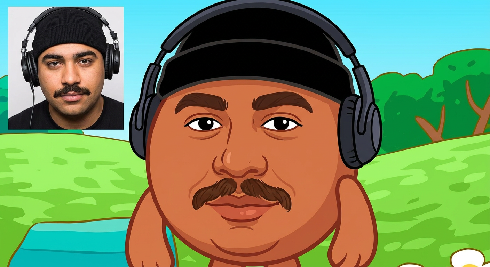
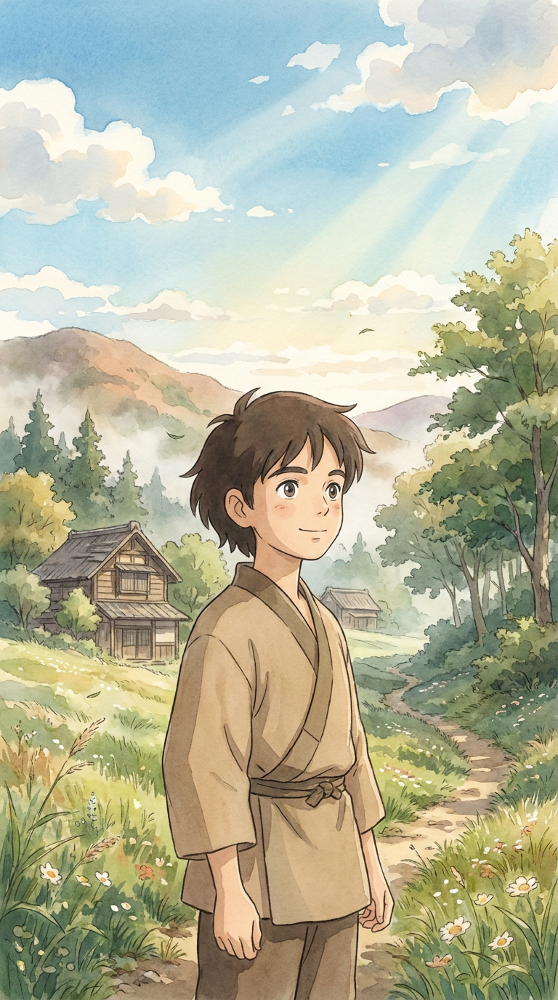
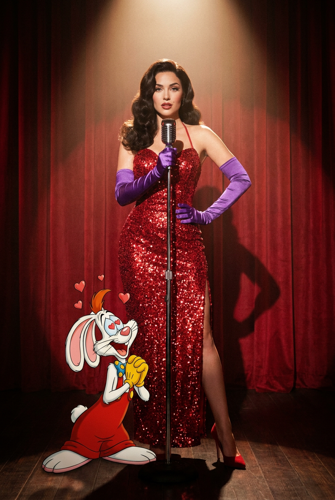
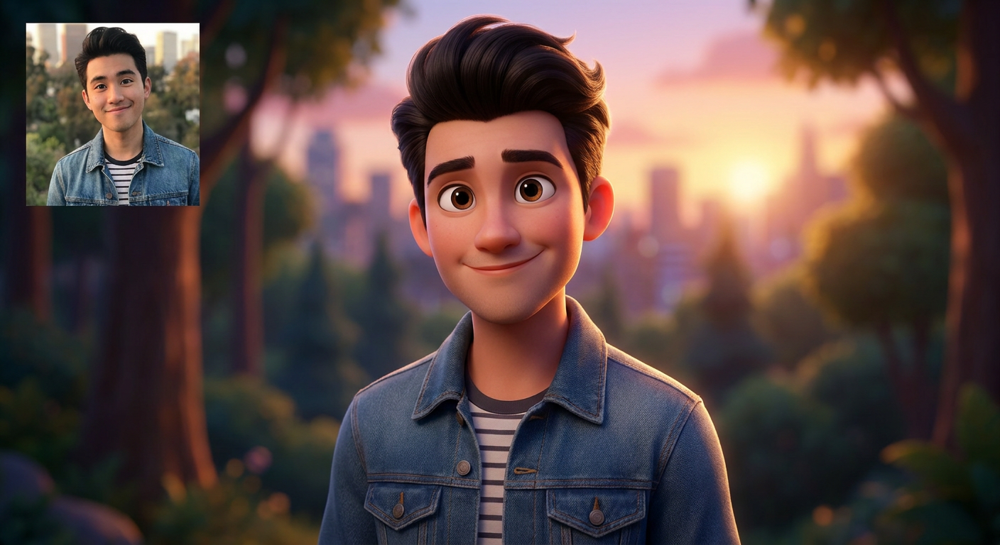
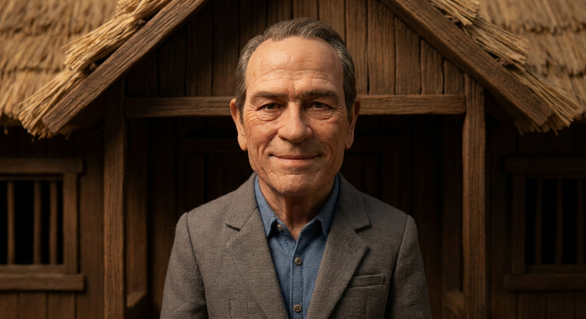
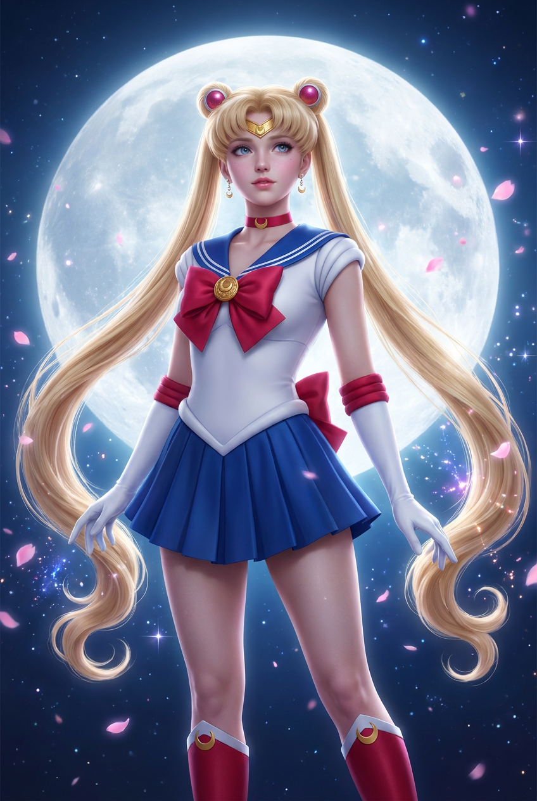
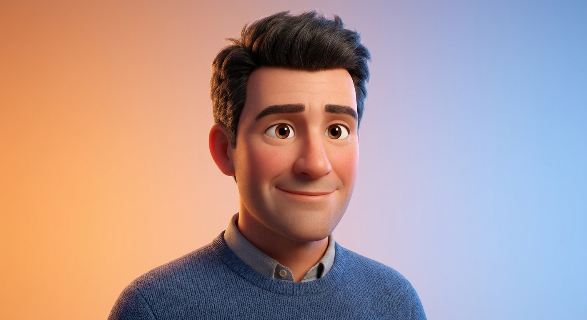
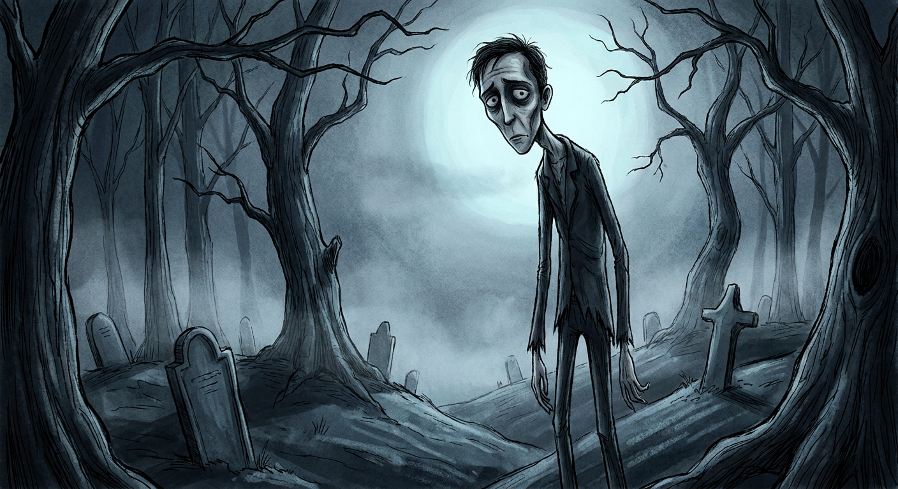
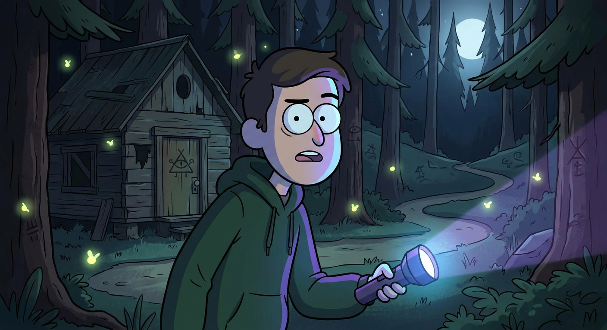
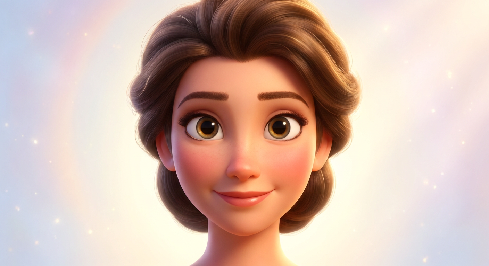

ИИ-фото в стиле мультиков: 10 промптов для нейросети

Обычный портрет не всегда передаёт настроение, характер или мечту о необычном образе. Генерация помогает превратить фотографию в кадр из мультфильма: с новой ролью, выразительным светом и продуманным окружением.
В подборке — 10 сценариев для разных задач: от круглого героя в духе «Смешариков» и кукольной эстетики Laika до ретро-кабаре, magical girl, мрачной сказки и ночного приключения.
Как сгенерировать такое фото: пошагово
Нужен снимок анфас при ровном свете, лицо в кадре целиком, без тёмных очков и головных уборов. Разрешение от 1000 пикселей по короткой стороне. Чем чётче исходник, тем точнее модель повторит черты.
Выберите сценарий ниже и нажмите «Копировать» — текст уйдёт в буфер целиком, вместе с командой сохранения внешности. Эта команда стоит первой строкой и отвечает за то, чтобы на выходе было ваше лицо, а не случайное.
Кнопка «Сгенерировать» рядом с каждым промптом открывает модель в новой вкладке. Nano Banana Pro работает с референсом лица — в отличие от моделей, которые генерируют портрет с нуля и узнаваемость теряют.
Промпт — в поле ввода, портрет — через загрузку референса. Порядок значения не имеет, но без референса команда сохранения внешности работать не будет: модели нечего сохранять.
Для сторис и ленты берите 9:16, для превью и обложек — 4:3. Первый результат редко идеален: если поза или свет ушли не туда, поправьте соответствующую часть промпта и запустите заново. Обычно хватает двух-трёх итераций.
10 промптов для генерации
1. Круглый герой мультсериала
Строго сохранить внешность по загруженному референсу: черты лица, пропорции, мимику и текстуру кожи без изменений. Создай милого круглого персонажа, вдохновлённого человеком на загруженной фотографии, в узнаваемой эстетике 2D-анимационного сериала «Смешарики». Преврати героя в доброжелательное компактное животное с простым силуэтом, мягкими плавными контурами и выразительной мимикой. Сохрани индивидуальное впечатление от лица и характер человека, но адаптируй черты к лаконичной мультяшной форме: крупные глаза, аккуратные детали, чистые цветовые пятна. Используй фирменную плоскую рисовку, ровные заливки, мягкие тени и аккуратные контуры без фотореализма и 3D-объёма. Персонаж должен выглядеть как полноценный герой анимационного сериала, а не как фотография с фильтром. Добавь светлый дружелюбный фон, гармонирующий с цветом героя, и оставь достаточно воздуха вокруг силуэта.
2. Сказочный кадр путешествия

Строго сохранить внешность по загруженному референсу: черты лица, пропорции, мимику и текстуру кожи без изменений. Сделай из человека на фотографии красивого 2D-персонажа для атмосферного анимационного фильма в духе японской сказочной рисованной анимации. Композиция — официальный promotional still: герой расположен по центру или показан в выразительной сюжетной позе, вокруг — детализированный, но не перегруженный пейзаж. Добавь ощущение путешествия, спокойствия и чуда: облачное небо, траву, старые домики, лесную тропу, лёгкий ветер, солнечные блики, цветы или тонкий туман. Используй мягкие линии, выразительные глаза, естественную мимику, живописную композицию и hand-painted animation с watercolor textures. Палитра нежная, тёплая, слегка приглушённая, свет кинематографичный. Лицо должно оставаться стилизованным, без фотореализма, 3D-рендера и изменения личности персонажа. Добавь nostalgic magical mood и высокую детализацию окружения.
3. Ретро-кабаре на сцене

Строго сохранить внешность по загруженному референсу: черты лица, пропорции, мимику и текстуру кожи без изменений. Построй театральный кинематографичный кадр на стыке живого действия и классической 2D-анимации. В центре сцены стоит взрослая красивая женщина у винтажного микрофона на стойке; её поза уверенная, эффектная и слегка игривая, как у главной звезды кабаре. На заднем плане — красные бархатные шторы, сверху падает тёплый узкий прожектор, вокруг ощущается атмосфера ретро-шоу. На героине роскошное красное вечернее платье в пол с облегающим силуэтом и высоким боковым разрезом; вся ткань покрыта сияющими пайетками или кристаллическим блеском. Добавь длинные фиолетовые атласные либо бархатные перчатки выше локтя — это главный контрастный акцент образа. Сохрани естественную мимику и узнаваемость лица, но подай сцену как эффектный гибрид high-detail live action и рисованной анимации. Свет должен подчёркивать блеск платья, микрофон и театральную глубину.
4. Объёмный герой семейного кино

Строго сохранить внешность по загруженному референсу: черты лица, пропорции, мимику и текстуру кожи без изменений. Преврати человека с фотографии в современного объёмного 3D-персонажа для дорогого семейного анимационного фильма в Disney-style эстетике. Сделай лицо более мультяшным, но узнаваемым: большие выразительные глаза, мягкие черты, аккуратный нос, естественная улыбка, гладкая кожа и приятные пропорции. Сохрани возраст, личность, причёску и ключевые особенности внешности. Одежда должна выглядеть дорого и аккуратно: реалистичная ткань, мягкие складки, чистый дизайн без лишних деталей. Используй тёплую кинематографичную цветокоррекцию, мягкие тени, лёгкий контровой подсвет по краям и polished high-end render. Фон слегка размытый, с намёком на приключение, магию или красивый городской пейзаж. Картинка должна быть vibrant, charming и объёмной, но без ощущения пластиковой игрушки, фотореалистичной кожи или чужого лица.
5. Кукла в эстетике stop-motion

Строго сохранить внешность по загруженному референсу: черты лица, пропорции, мимику и текстуру кожи без изменений. Собери из человека на фотографии персонажа в эстетике Laika animation — словно физическую куклу, снятую покадрово на миниатюрной съёмочной площадке. Пропорции слегка стилизованные, но лицо и общее сходство должны оставаться узнаваемыми. Добавь фактуру материала: немного текстурированную кожу, тонкие следы ручной работы, видимые детали поверхности, аккуратно уложенные волосы и одежду с осязаемой тканью. Глаза сделай выразительными, но не чрезмерно огромными; мимика живая и чуть театральная. Используй мягкое студийное освещение, кинематографичный свет, деликатные тени и ощущение настоящего объёмного объекта. Цвета — насыщенные, но не глянцевые, без стерильного цифрового блеска. Важны handcrafted details, лёгкая неровность и глубина резкости, как при съёмке кукольной декорации. Не превращай сцену в обычный фотореализм или гладкий рекламный 3D-рендер.
6. Героиня лунной магии

Строго сохранить внешность по загруженному референсу: черты лица, пропорции, мимику и текстуру кожи без изменений. Создай высокодетализированную 3D-аниме сцену с магической героиней в эстетике японского аниме 1990-х и волшебной школьной сказки. Девушка показана в полный рост: корпус слегка развёрнут, руки мягко опущены или немного разведены, взгляд прямой, спокойный и мечтательный, выражение нежное, чистое и героическое. Лицо адаптируй под красивую аниме-стилизацию: большие выразительные глаза, аккуратный нос, мягкие губы, идеальная симметрия и сохранившийся общий овал лица. На ней классический magical girl sailor costume: белый облегающий верх, синий sailor collar с широкими белыми полосами, большой красный бант на груди и короткая юбка в соответствующей сине-белой гамме. Добавь аккуратные перчатки, высокие сапоги и блестящие магические акценты, не перегружая костюм. Свет мягкий, лунный и слегка сияющий, фон напоминает школьный двор или фантастическую ночь. Нужен polished 3D anime render с чистыми материалами и кинематографичной глубиной.
7. Добрый герой 3D-фильма

Строго сохранить внешность по загруженному референсу: черты лица, пропорции, мимику и текстуру кожи без изменений. Сделай из человека на фото доброжелательного 3D-персонажа в стиле Pixar и представь результат как кадр из дорогого анимационного фильма. Сохрани узнаваемые форму глаз, носа и губ, причёску, общий возраст и характер внешности. Глаза можно немного увеличить, чтобы усилить эмоцию; кожа гладкая, мягкая и живая, с лёгким естественным румянцем. Волосы объёмные, с аккуратными прядями и реалистичной текстурой, одежда — с проработанными материалами и естественными складками. Используй тёплое студийное освещение, мягкие тени, чистый фон с деликатным градиентом и лёгкий контурный свет. Персонаж должен выглядеть ярко, эмоционально и дружелюбно, как polished character design с high detail и cinematic lighting. Не искажай лицо, не меняй личность и не делай героя похожим на другого человека. Избегай пластикового блеска, чрезмерно огромных глаз и пустого белого фона.
8. Мрачная сказка под луной

Строго сохранить внешность по загруженному референсу: черты лица, пропорции, мимику и текстуру кожи без изменений. Создай кинематографичную сцену в эстетике мрачной сказки Тима Бёртона, используя человека с портрета или фотографии в полный рост как основу образа. Персонаж должен оставаться узнаваемым, но получить вытянутые пропорции, слегка искажённую анатомию, тонкие конечности, бледную кожу и большие меланхоличные глаза. Вокруг — искривлённые деревья с закрученными ветвями, неровные холмы, туман и сюрреалистическая перспектива. Освещение лунное или созданное слабым мистическим свечением; добавь объёмный туман и контрастные силуэты. Палитра ограниченная и холодная: синий, серый, чёрный, без ярких тёплых цветов. Покажи ручную графику, неровные линии, фактуру кисти и зернистость, чтобы изображение напоминало 2D-иллюстрацию с иллюзией объёма. Настроение eerie whimsical, готическое и немного печальное. Не используй глянец, реалистичную фотографическую кожу и гладкий рекламный рендер.
9. Ночная тайна в лесу

Строго сохранить внешность по загруженному референсу: черты лица, пропорции, мимику и текстуру кожи без изменений. Преобразуй человека с фотографии в героя ночного мистического эпизода в духе Gravity Falls. Сохрани черты лица и узнаваемость, но переведи образ в яркую 2D-анимацию с ручной рисовкой: чёткий контур, простая форма носа и рта, выразительные глаза, мягкая мультяшная мимика и небольшие несовершенства линии. Помести персонажа в тёмный лес с таинственной тропой, старым сараем, светлячками, странными символами и намёками на сверхъестественное. Добавь синевато-фиолетовые тени, ночной свет луны и слабое свечение от фонарика или загадочного артефакта. Настроение слегка тревожное, но не хоррор: это приключение с загадкой, а не пугающая сцена. Используй плоскую cartoon-цветоподачу, hand-drawn imperfections и насыщенные локальные цвета. Не добавляй реалистичную кожу, объёмный 3D-свет, фотореалистичные материалы и не меняй лицо героя.
10. Классическая сказочная героиня

Строго сохранить внешность по загруженному референсу: черты лица, пропорции, мимику и текстуру кожи без изменений. Представь человека с фотографии персонажем классической диснеевской анимации и оформи результат как кадр из профессионального animated feature film. Сохрани форму глаз, носа и губ, причёску, общий возраст и узнаваемое впечатление от внешности. Сделай глаза немного крупнее и выразительнее, добавь мягкие черты, гладкую красивую кожу, лёгкий румянец и тёплую дружелюбную мимику. Волосы объёмные, аккуратно уложенные, с мягкими бликами и чистыми прядями. Используй сказочное тёплое освещение, нежное сияние по контуру, аккуратные тени и polished high-detail rendering. Фон светлый и воздушный: мягкий градиент, лёгкое волшебное свечение или едва заметные элементы сказочного мира. Цвета яркие, но элегантные, без кислотной насыщенности. Персонаж должен выглядеть доброжелательно и выразительно, без искажения лица, смены личности, фотореализма или сходства с другим человеком.
Что важно учесть в этом стиле
Мультяшная стилизация не равна простому фильтру. Нейросети нужно задать тип изображения, характер линий, пропорции, свет и среду. Для 2D лучше отдельно описывать контур, заливки и ручную фактуру, а для 3D — материалы, тени, объём волос и глубину резкости.
Сходство с человеком обычно лучше сохраняется на портрете анфас или в три четверти. Если нужна узнаваемая причёска, одежда или поза, добавляйте их в промпт отдельными фразами и используйте фото хорошего качества без сильных фильтров.
Идеи для вариаций
- Поменяйте время суток: золотой час, дождливое утро или синяя лунная ночь.
- Перенесите героя в библиотеку, поезд, подводный город или на крышу старого дома.
- Добавьте реквизит: карту сокровищ, музыкальную шкатулку, волшебную палочку или винтажный фотоаппарат.
- Попробуйте крупный план 85 мм, поясной портрет 50 мм или полный рост с объективом 35 мм.
- Для большей чёткости укажите разрешение 2048×2048 или 4K и попросите 3–5 вариантов с разной мимикой.
Как собрать свой промпт
Начните с формата: портрет, полный рост или театральная сцена. Затем опишите роль героя, одежду, позу и ключевые детали лица. После этого задайте окружение, источник света, палитру и визуальную технику — например, ручную 2D-рисовку, stop-motion или объёмный 3D-рендер.
В конце добавьте ограничения: без фотореализма, лишних пальцев, случайных надписей, чужого лица или изменения возраста. Для серии кадров фиксируйте соотношение сторон, цветовую палитру и основные элементы костюма, а меняйте только фон и действие.
Ошибки, из-за которых кадр не получается
- Слишком много стилей. Не смешивайте одновременно кукольную анимацию, акварель, фотореализм и глянцевый 3D.
- Размытые требования к сходству. Укажите, какие элементы нужно сохранить: форму причёски, возраст, мимику или конкретную одежду.
- Перегруженный фон. Оставьте две или три главные детали окружения, иначе герой потеряется.
- Противоречивый свет. Не просите одновременно солнечный полдень и холодное лунное контровое освещение.
- Неподходящее фото. Снимок с закрытым лицом, сильным наклоном головы или плохим светом ухудшит результат.
Частые вопросы
Как сделать такое ИИ-фото бесплатно?
Попробуйте Kandinsky и Шедеврум: они позволяют генерировать изображения без оплаты, но качество работы с лицом и референсом зависит от конкретного режима. Krea AI и Arena.ai удобны для экспериментов, однако бесплатный доступ может ограничивать число попыток, скорость, разрешение или загрузку исходного фото. Для точного сходства лучше заранее подготовить чёткий портрет и сделать несколько генераций.
Какое фото лучше загрузить в качестве референса?
Подойдёт резкий портрет при мягком равномерном свете, где лицо не закрыто волосами, очками или рукой. Для полного роста используйте снимок без сильного наклона камеры. Нейтральный фон помогает модели точнее отделить человека от окружения.
Почему нейросеть меняет лицо или возраст?
Модель одновременно пытается решить задачу стилизации, позы, света и композиции. Если описание перегружено, она может пожертвовать сходством. Уберите второстепенные детали, добавьте запрет на изменение возраста и повторите генерацию с более крупным портретным референсом.
Как получить несколько похожих кадров с одним персонажем?
Сохраните базовое описание героя, одежду, палитру и параметры кадра, а затем меняйте только сцену или действие. Используйте один и тот же референс, соотношение сторон и seed, если выбранный сервис поддерживает эту настройку. Для серии лучше сначала добиться удачного лица, а потом расширять сюжет.